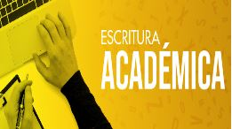
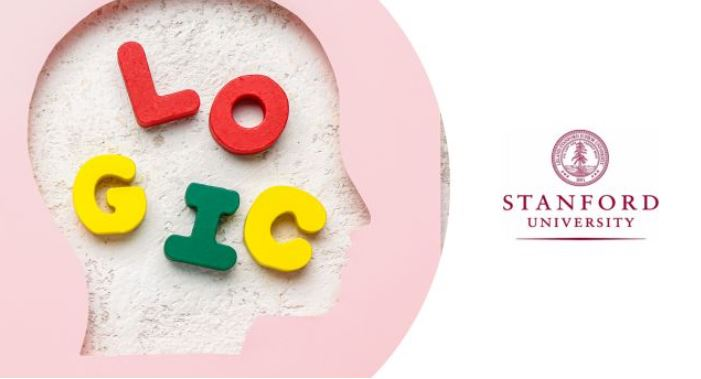

Lenguaje y Literatura
UAMx: La España del Quijote
La España del Quijote es un viaje a nuestro esplendor cultural, a un Siglo de Oro que elevó las artes y las letras hispanas a la excelencia mundial.
¡Ingresa ya!

Escritura Académica
Concebimos a la escritura académica como una competencia comunicacional compleja.
¡Ingresa ya!
Estrategias de comprensión
¡Te invitamos a acompañarnos en este curso, en el que, de manera totalmente
práctica, y gracias a actividades sumamente dinámicas, lograrás comprender y disfrutar las lecturas!
¡Ingresa ya!
Matemáticas
Curso de matemáticas preuniversitarias
Con este curso de matemáticas preuniversitarias aprenderás a introducir conceptos
matemáticos básicos y maximizar tus posibilidades de éxito en materias cuantitativas de nivel universitario.
¡Ingresa ya!

Curso de matemáticas para el pensamiento crítico
Este curso de matemáticas para el pensamiento crítico te
permitirá afianzar algunos conceptos sobre álgebra y aritmética.
¡Ingresa ya!
Curso sobre matemáticas discretas para resolver problemas
Aprenderás sobre resolución de problemas utilizando conceptos y técnicas de matemáticas discretas.
¡Ingresa ya!
Informatica

Curso de introducción a la Lógica
En este curso gratuito de introducción a la lógica, tendrás un
acercamiento con esta ciencia desde una perspectiva computacional.
¡Ingresa ya!
Curso de ciberseguridad básica
Este curso de ciberseguridad básica te enseñará los conocimientos más
demandados en la industria actual en el área de ciberseguridad, una de las más importantes.
¡Ingresa ya!
Curso de Word de cero a experto
Curso gratuito de Word de cero a experto en el que descubrirás
cómo trabajar con este procesador de textos y manejarlo a nivel profesional.
¡Ingresa ya!